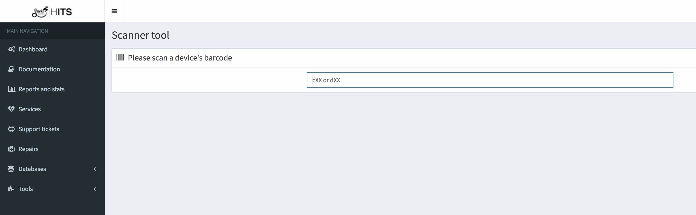

Heady Information Technology System
Mission: Create an in-house IT management system for Smoke Cartel and its divisions
DEVELOPMENT: PHP + MYSQL
As Information Technology Systems Engineer at Smoke Cartel, a common problem was managing the company's devices. Making sure inventory and records on devices were accurate and making sure the network was running smoothly were all part of the task.
The Heady Information Technology System (HITS) manages all devices in a network in addition to managing peripherals, tech support requests and repairs, and services. Inventory was managed through an easy-to-use form that would contain all pertinent information about a device, would match it with its peripherals and would issue inventory tags.
Because all inventory information was kept in a central database, this made incorporating tech support help desk features easy. Users could submit a help desk request and it would automatically be assigned to the affected devices/peripherals. Notes would be automatically managed to keep tabs on faulty devices and repairs could be easily tracked.
Service Management is another feature of HITS. Services are small scripts that manage things like backups or checking to make sure devices are online. Services can be written quickly using Node or Python and run on the company's applications server and report back to the web server. All managed by the HITS application. The HITS application serves as a one-stop dashboard for everything running in the IT system. Because all this data is stored in a singular relational database, the information is easy to use and new applications and features can be quickly written to take advantage of it.
HITS was designed to be mobile friendly and run well on a tablet. When a problem arises, the IT technician could take a portable tablet, scan the automatically issued ID tag, and get all information about a device's history.
The final feature of HITS was the living documentation pages. All documentation about the network could be securely stored and accessed by those who had proper clearance. This made having multiple IT technicians easier because documentation was readily available. By having centralized documentation, all devices could also be set up identically, keeping unity to the network.
Features
- Inventory management
- Small script ("service") management
- Tech support ticket management
- Tech support repair management
- Flexible, central database of all IT related items
- "Living" network documentation
Technologies used
- PHP
- MySQL
- Local client on a Windows Server to manage services
- Bootstrap 3